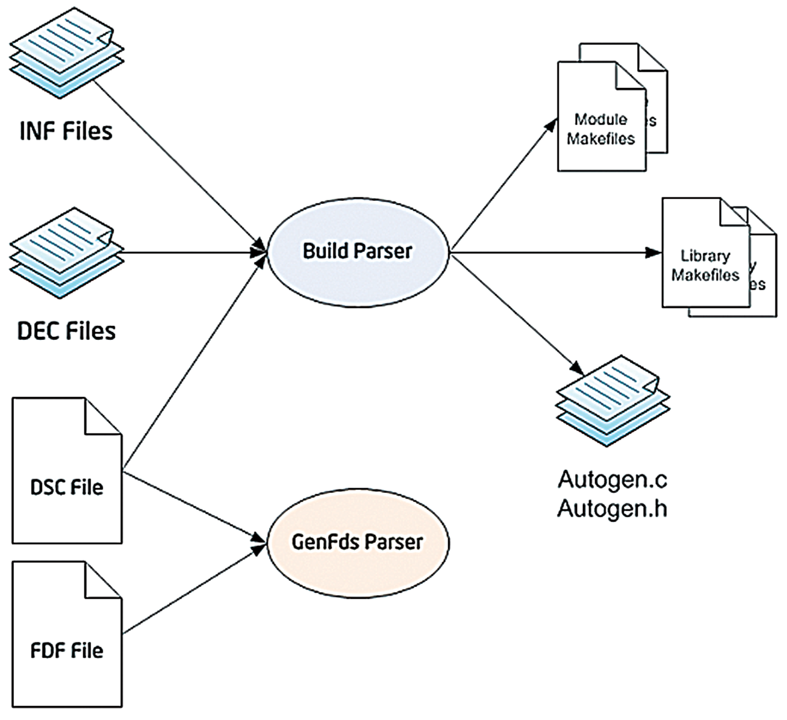
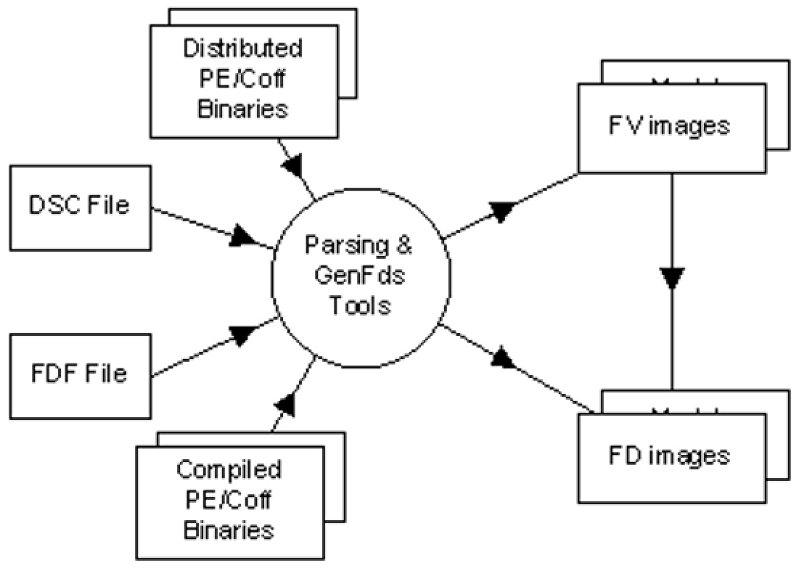

2.1 Processing Overview
The EDK II FDF file describes information about flash parts as well as rules
for combining binaries (Firmware Image) built from a DSC file. Additionally, if
a DSC file specifies a FLASH_DEFINITION file, then the EDK II tools will
locate the FDF file (looking in the same directory as the DSC file, then the
parsing utilities will scan the FDF file to gather PCD information that can be
used by AutoGen utilities for building components or modules. The output of the
first phase of an EDK II build (as defined in the EDK II Build Specification)
generates valid PE32/PE32+/Coff image files. The second phase of the build
process consumes the images generated during the first phase, using statements
and rules defined in the FDF file to process the PE32/PE32+/Coff images files
into one or more EFI sections. The EFI sections may get combined with other
optional sections (version, depex, user interface) sections, into EFI Firmware
File system (FFS) Sections. FFS images are put into Firmware Volumes (FVs,) and
finally, the FV sections are combined into one or more Flash Device binary
image (FD).
The following diagrams illustrate the process flow for generating the PE/PE32+/Coff files that will be used for Flash Image files.
Figure 1 EDK II Build Data Flow

The following diagram shows the overview of the process used to create final image files.
Figure 2 EDK II Create Image Flow

It should be noted that some SEC, PEI_CORE and/or PEIM modules are coded
XIP (eXecute In Place) running directly from ROM, rather than from memory. For
modules that always execute from ROM, the relocation (.reloc) section of the
PE32 image can be removed (after running a fix up tool) as a space saving
technique. Some PEIM modules may run from either ROM or from memory. There are
several methods that can be used to retain this information (as well as the
.reloc sections of stripped images). Due to this possibility, the SEC,
PEI_CORE and PEIM descriptions are different from the remaining module
types. The default for all SEC, PEI_CORE and PEIM modules is to strip the
.reloc section. The modules coded to use REGISTER_FOR_SHADOW must not have
the .reloc section stripped.
Also of note, not all of the INF files listed in the FDF file need to be listed in the DSC file. Since the DSC file is primarily used to generate Makefiles for a build, binary only modules do not need to be listed in a DSC file, and can be listed in the FDF file.
2.1.1 Platform Configuration Database (PCD) Settings
The FD, FV and Capsule sections (and nested sections) permit setting PCD
default values. All PCDs must be declared in a DEC file in order to be used. It
is recommended that the PCDs set in the FDF file be for Addresses, Sizes,
and/or other "fixed" information needed to define or create the flash image.
Use of PCDs is permitted in the FDF file. The Dynamic and DynamicEx PCDs
can be accessed or modified during execution, as result, they cannot be set
within the FDF file.
Note: The PCD values set in this file are assumed to be correct on all conditions that the reset vector in SEC is executed, such as power-on, reset and ACPI S3 resume. Use of the PatchableInModule PCD access method for base addresses is permitted, but when this PCD access method is used, module implementations must always access the values through the PcdGet() and PcdSet() operations to guarantee that stale base address values are never used.
All FLASH related PCD settings MUST be set in the FDF file, not in the platform description (DSC) file. The FDF file has the final values for Flash Related PCDs. If a DSC file contains a duplicate PCD setting, the FDF file's PCD setting takes precedence and it is recommended that the build tools throw a warning message on the PCD defined in the DSC file. Default values from DEC files are not permitted in the EDK II build system for PCDs specified in the FDF file.
The PCDs used in the FDF file must be specified as:
PcdTokenSpaceGuidCName.PcdCName
2.1.2 Precedence of PCD Values
The values that are assigned to individual PCDs required by a build may come from different locations and different meta-data files. The following provides the precedence (high to low) to assign a value to a PCD.
- Command-line,
--pcdflags (left most has higher priority) - DSC file, Component INF
<Pcd*>section statements - FDF file, grammar describing automatic assignment of PCD values
- FDF file, SET statements within a section
- FDF file, SET statement in the [Defines] section
- DSC file, global [Pcd*] sections
- INF file, PCD sections, Default Values
- DEC file, PCD sections, Default Values
In addition to the above precedence rules, PCDs set in sections with architectural modifiers take precedence over PCD sections that are common to all architectures.
If a PCD is listed in the same section multiple times, the last one is used.
PCD RULES
There are no PCD sections defined for the FDF file. PCD values are assigned in the FDF file using two methods. They may automatically be assigned based on a specific position (as defined in the FDF specification) or by using a SET statement.
Within the
[FD]sections, PCDs that appear immediately following the line containing address|size or offset|size values will have their values automatically assigned to the address|size or offset|size using the same ordering. Additionally, some tokens, such asBaseAddress, which use a format of token = value, can have a PCD's value set at the same time. The PCD must be on the same line, and be separated from the value by field separator character.If there are two values on the line, separated by a field separator character, the PCD names that will be assigned the values must appear on the next line, and must also be separated by the field separator character.Specific tokens assigned to values within the FD sections can have a PCD automatically assign the same value by placing a field separator character between the value and PCD name. The PCD name must always follow the value field separator character sequence.
Other PCDs may be assigned using the
SETstatement in the FDF file.PCD Values assigned in this file (using
SET PcdName = value) override values assigned in the DSC file, or, if a value is not specified in the DSC, then they will override values assigned in an INF file, or if a value is not specified in the DSC or the INF, then they will override values assigned in the DEC file.Dynamic and DynamicEx PCDs cannot be set in the FDF file.